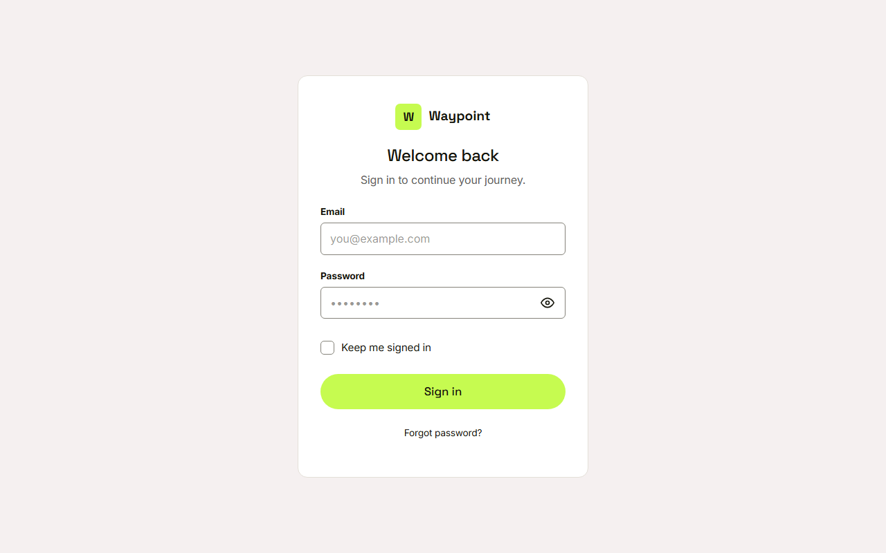
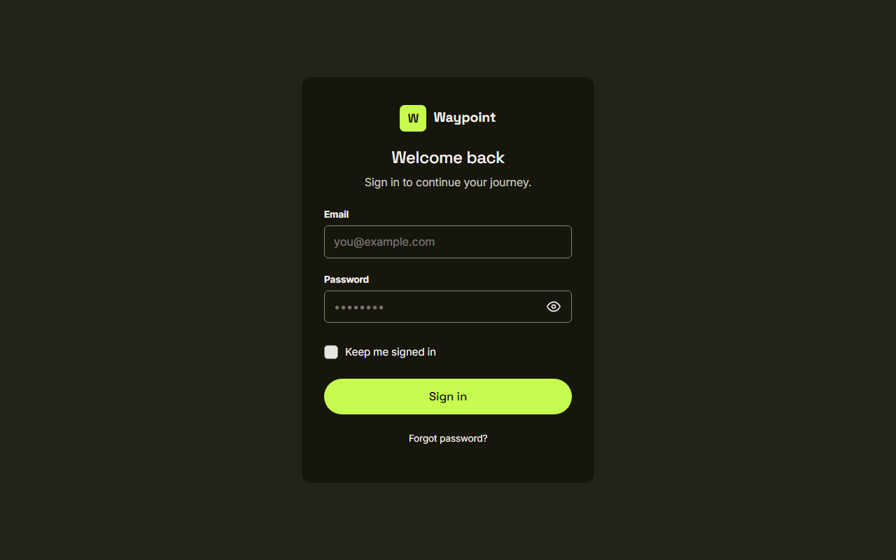
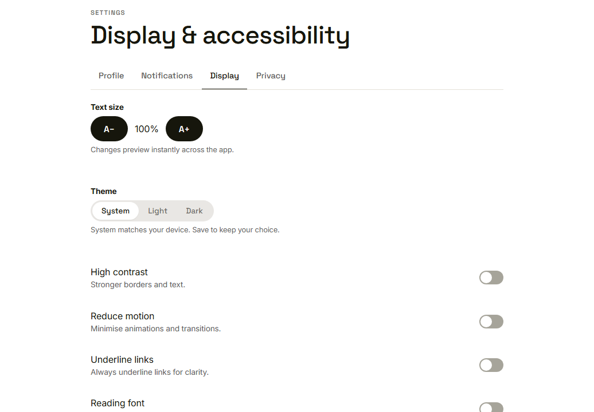
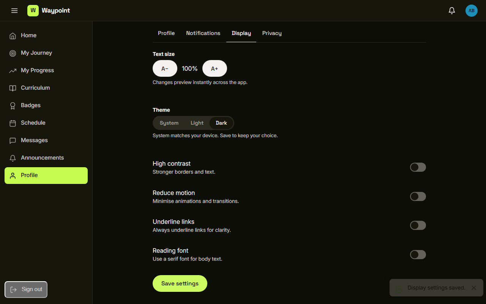
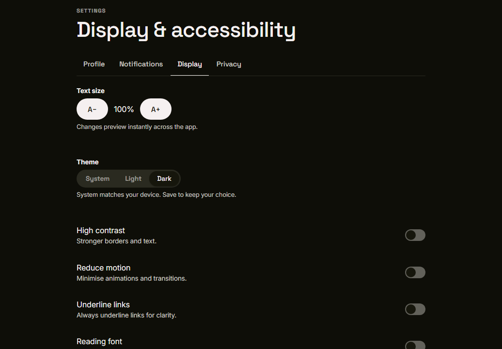

Waypoint · Video 117
Switching between light and dark
System, light and dark themes
Signed out: follow the device

Device set to light

Device set to dark
Theme: System, Light or Dark

System is the default
A live preview
 Nothing is sent until she saves
Nothing is sent until she saves
Display settings saved

Saved with a short message
Still dark after a reload

A saved choice overrides the device
Things to remember
- Signed out pages follow the device
- System, light or dark; system is the default
- A choice previews instantly and is kept on save
- Every page reads shared colour tokens